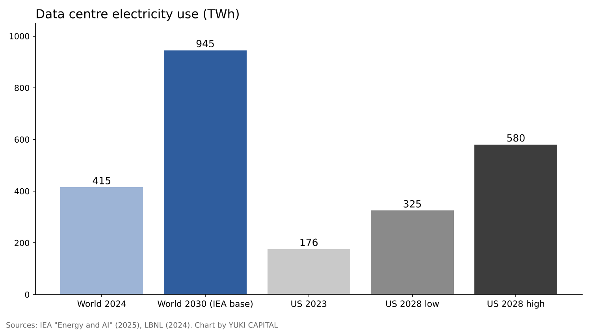
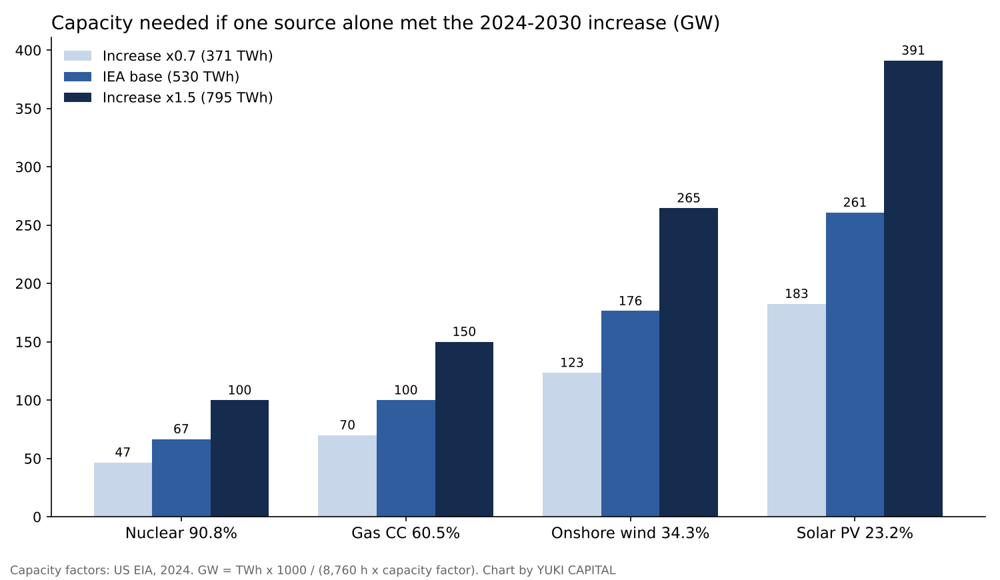

How far will AI power demand rise by 2030, and which sources can supply it? Renewables, nuclear, fossil fuels and fusion, side by side in numbers
The International Energy Agency (IEA) estimates that the world's data centres used about 415 TWh of electricity in 2024, roughly 1.5% of global electricity consumption [1].
In the same study's base case, that figure more than doubles to about 945 TWh by 2030. The increase is about 530 TWh, and the spread of AI is cited as the main reason [1].
This piece asks one question. How much of that roughly 530 TWh increase could renewables, nuclear, fossil fuels and fusion each supply, with how much capacity, and by when? I do not reach a verdict here; I only line up the numbers.

Question and background
First, three definitions. A TWh (terawatt-hour) is a unit of energy equal to one billion kWh. The capacity factor is the electricity a plant actually generated in a year divided by what it would have generated running at full output all year. LCOE (levelised cost of energy) is the cost per MWh of building, operating, fuelling and decommissioning a plant, divided by its lifetime output [5].
The roughly 415 TWh of 2024 is only about 1.5% of world electricity use. By region, the United States accounts for 45%, China 25% and Europe 15% [1].
A report by Lawrence Berkeley National Laboratory (LBNL), released by the US Department of Energy, found that US data centre electricity use rose from 58 TWh in 2014 to 176 TWh in 2023, or 4.4% of the national total. It projects 325 to 580 TWh by 2028, or 6.7% to 12% of the total [2].
In Japan, the 7th Strategic Energy Plan, adopted by the Cabinet on February 18, 2025, projects that the country will need up to about 1.2 trillion kWh of generation in fiscal 2040, about 1.2 times the fiscal 2023 level. It cites new and expanded data centres and semiconductor plants as reasons [3]. The same plan sets the fiscal 2040 mix at about 40-50% renewables, about 20% nuclear and about 30-40% thermal. In fiscal 2023 the actual shares were 22.9% renewables, 8.5% nuclear and 68.6% thermal [3].
Data and method
On the demand side, I use only two sources: the IEA "Energy and AI" base case for 2024 and 2030, and LBNL's US estimates for 2023 and 2028 [1][2]. On the supply side, I compare four yardsticks: 2024 capacity factors from the US Energy Information Administration (EIA) [4], unsubsidised LCOE published by Lazard in June 2025 [5], median lifecycle greenhouse gas emissions compiled in the IPCC Fifth Assessment Report [6], and 2025 global generation compiled by Ember [7].
For nuclear construction, I check the World Nuclear Association list as of October 23, 2026 [8] and the IEA "Global Energy Review 2026" [9]. For fusion, I use published material from Lawrence Livermore National Laboratory (LLNL) [10], the ITER Organization [11] and the Fusion Industry Association (FIA) [12].
There is a single calculation. If the 2024-2030 increase were met by one source alone, how many GW would be needed? Capacity (GW) = energy (TWh) x 1,000 / (8,760 hours x capacity factor). Real systems use a mix, so this figure is a yardstick for comparing the sources' relative scale.
Results: how far demand rises
| Scope | Year | Electricity use | Share of country or world | Source |
|---|---|---|---|---|
| World data centres | 2024 | about 415 TWh | about 1.5% | IEA [1] |
| World data centres | 2030 (base case) | about 945 TWh | - | IEA [1] |
| US data centres | 2023 | 176 TWh | 4.4% | LBNL [2] |
| US data centres | 2028 (estimate) | 325-580 TWh | 6.7-12% | LBNL [2] |
| Japan, total generation | FY2040 (outlook) | up to about 1.2 trillion kWh | about 1.2x FY2023 | 7th Strategic Energy Plan [3] |

The global increase over the six years from 2024 to 2030 comes to about 530 TWh. The US alone would add 149 to 404 TWh over the five years from 2023 to 2028.

Results: four types of source, side by side
| Source | Capacity factor (US, 2024) | Unsubsidised LCOE ($/MWh) | Lifecycle emissions (gCO2/kWh, median) | Scale |
|---|---|---|---|---|
| Solar PV (utility) | 23.2% | 38-78 | 48 | 2,778 TWh worldwide in 2025, +636 TWh in one year |
| Onshore wind | 34.3% | 37-86 | 11 | +205 TWh worldwide in 2025 |
| Nuclear | 90.8% | 141-220 | 12 | 79 reactors, 86.6 GW under construction (38 in China) |
| Gas (combined cycle) | 60.5% | 48-109 | 490 | 21.8% of world generation in 2025, +36 TWh |
| Coal | 42.6% | 71-173 | 820 | 33.0% of world generation in 2025 (10,476 TWh), -63 TWh |
Sources: capacity factors from EIA [4], LCOE from Lazard [5], emissions from IPCC [6], scale from Ember [7] and the World Nuclear Association [8].
Solar and wind together grew by 841 TWh in 2025 alone. Renewables as a whole reached 10,730 TWh, 33.8% of world generation, overtaking coal's 33.0% for the first time [7]. On output growth alone, they are expanding by more in one year than the 530 TWh that demand adds over six.
Data centres, however, draw power around the clock. Solar runs at a 23.2% capacity factor, and the remaining hours must be filled by batteries or other sources. In the same Lazard report, the levelised cost of four-hour battery storage is put at $145 to $319 per MWh [5].
If all 79 reactors (86.6 GW) now under construction were running at a 90.8% capacity factor, they would generate about 689 TWh a year, more than the 530 TWh added by 2030. About half of the capacity under construction is in China, however [9], and completion dates differ from reactor to reactor. The IEA says about 3 GW of new nuclear was connected to grids in 2025 while about 3 GW was retired, leaving global capacity at 420 GW [9].
Gas and coal already account for just over half of world generation. In 2025 coal fell by 63 TWh and gas rose by 36 TWh [7]. Lifecycle emissions are 820 g per kWh for coal and 490 g for gas, dozens of times nuclear's 12 g and wind's 11 g [6].
Results: where fusion stands now
Fusion means joining light atomic nuclei and capturing the energy released. In an experiment on April 7, 2025, LLNL's National Ignition Facility (NIF) obtained 8.6 MJ of fusion energy from 2.08 MJ of laser energy delivered to the target, a record gain of 4.13 that beat the 5.2 MJ of February 2024 [10]. This gain is measured against the laser energy reaching the target, not against the electricity the whole facility consumes.
ITER, under international construction, set out a new plan in July 2024: start of research operation in 2034, deuterium-deuterium operation in 2035, and deuterium-tritium operation from 2039 [11]. Its goal is 500 MW of thermal output from 50 MW of heating for 400 seconds. ITER is not designed to generate and sell electricity.
In the private sector, the FIA's 2025 report found that 53 surveyed companies had raised a cumulative $9.766 billion, including $2.64 billion in the latest 12 months. Asked when they would first deliver power to the grid, 53% said by 2035 and 84% by the end of the 2030s [12]. Against the 530 TWh increase by 2030, fusion supplies 0 TWh in every published plan.
Sensitivity analysis
I moved the demand increase across three cases, 0.7 times (371 TWh), 1.0 times (530 TWh) and 1.5 times (795 TWh) the IEA base case, and combined each with the four capacity factors to get 12 capacity requirements.

| Increase | Nuclear (90.8%) | Gas CC (60.5%) | Onshore wind (34.3%) | Solar PV (23.2%) |
|---|---|---|---|---|
| 371 TWh (x0.7) | 47 GW | 70 GW | 123 GW | 183 GW |
| 530 TWh (base) | 67 GW | 100 GW | 176 GW | 261 GW |
| 795 TWh (x1.5) | 100 GW | 150 GW | 265 GW | 391 GW |
To supply the same energy, solar needs about 3.9 times the capacity of nuclear, onshore wind about 2.6 times and gas combined cycle about 1.5 times. These ratios are set by the capacity factors, so they do not change when the demand assumption moves. What moves is the absolute size: the 67 GW of nuclear in the base case becomes 100 GW if demand is 1.5 times higher. The 86.6 GW of nuclear under construction exceeds the base-case 67 GW but falls short of the 100 GW in the 1.5x case.
Discussion
There are two opposing views. One holds that efficiency gains will keep demand below the estimates; LBNL's low end of 325 TWh is only 56% of its high end of 580 TWh [2]. The other holds that the estimates are too small; taking the US high end at face value, the US alone would account for more than 70% of the world's six-year increase.
These numbers have limits. Capacity factors and LCOE are US values and differ in Japan or China. LCOE excludes grid reinforcement and the cost of covering output swings [5]. The emissions medians summarise studies up to 2014 [6] and do not reflect later technical improvements. The single-source calculation ignores the mix of sources, data centre locations and the wait for grid connections.
There are four checkpoints. Which way the IEA's next estimate moves the 2030 figure of 945 TWh. Where actual US use in 2028 lands within 325 to 580 TWh. How many of the 86.6 GW of nuclear under construction start operating by 2030. And whether ITER keeps to its 2034 start of research operation.
Conclusion
Lined up as numbers alone, it looks like this. World data centre electricity rises by about 530 TWh from 2024 to 2030. Meeting that with a single source would take 67 GW of nuclear, 100 GW of gas combined cycle, 176 GW of onshore wind or 261 GW of solar. Solar and wind grew by 841 TWh in 2025 alone, and the nuclear now under construction would produce about 689 TWh a year once running. In published plans, fusion contributes 0 TWh to the increase through 2030.
How I see it
Here in Japan, I am in favour of nuclear power. Even so, in this piece I chose not to decide which source is best, and only lined up the numbers.
SpaceX, which I hold, has set out a plan to raise its compute capacity to more than 13 GW by the end of 2027 [13]. If 13 GW ran all year, that would be about 114 TWh, roughly a fifth of the world's six-year increase. The three numbers I will watch are the IEA's next estimate, actual US use in 2028 and ITER's 2034 schedule.
Sources
- IEA, "Energy and AI", 2025-04-10 https://www.iea.org/reports/energy-and-ai
- U.S. Department of Energy / Lawrence Berkeley National Laboratory, "2024 United States Data Center Energy Usage Report", 2024-12-20 https://www.energy.gov/articles/doe-releases-new-report-evaluating-increase-electricity-demand-data-centers
- Agency for Natural Resources and Energy, METI, "7th Strategic Energy Plan", 2025-02-18 https://www.enecho.meti.go.jp/category/others/basic_plan/
- U.S. Energy Information Administration, "Electric Power Annual, Tables 4.08.A / 4.08.B Capacity Factors" https://www.eia.gov/electricity/annual/html/epa_04_08_b.html
- Lazard, "Levelized Cost of Energy+ (LCOE+) 2025", 2025-06-16 https://lazardltd.gcs-web.com/news-releases/news-release-details/lazard-releases-2025-levelized-cost-energy-report
- IPCC, "Climate Change 2014: Mitigation of Climate Change, Annex III: Technology-specific Cost and Performance Parameters", 2014 https://www.ipcc.ch/site/assets/uploads/2018/02/ipcc_wg3_ar5_annex-iii.pdf
- Ember, "Global Electricity Review 2026", 2026 https://ember-energy.org/latest-insights/global-electricity-review-2026/2025-in-review/
- World Nuclear Association, "Plans for New Reactors Worldwide", 2026-10-23 https://world-nuclear.org/information-library/current-and-future-generation/plans-for-new-reactors-worldwide
- IEA, "Global Energy Review 2026: Nuclear", 2026 https://www.iea.org/reports/global-energy-review-2026/technology-nuclear
- Lawrence Livermore National Laboratory, "National Ignition Facility - FY2025 Annual Report" https://annual.llnl.gov/fy-2025/national-ignition-facility-2025
- ITER Organization, "Baseline press conference summary", 2024-07 https://iter.org/sites/default/files/media/2024-07/baseline_press_conference_summary_july-2024_b.pdf
- Fusion Industry Association, "The global fusion industry in 2025", 2025-07 (summary by World Nuclear News) https://wnn.world-nuclear.org/articles/access-to-funding-remains-a-major-issue-for-fusion-says-fia
- Teslarati, "Elon Musk calls Earth's data centers peanuts next to what SpaceX is planning in orbit", 2026-11 https://teslarati.com/elon-musk-calls-earths-data-centers-peanuts-next-to-what-spacex-is-planning-in-orbit
Photos: Matthew Henry, Lukáš Lehotský (Unsplash). Charts by YUKI CAPITAL
I record my daily numbers and decisions on X.